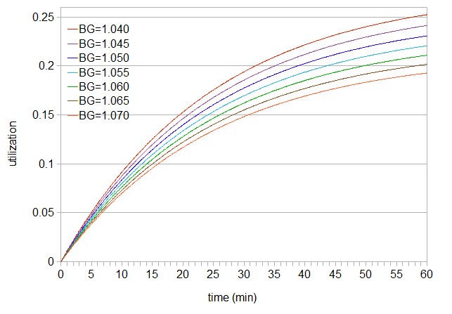
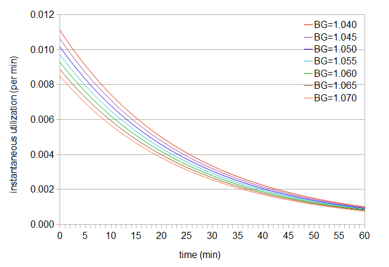
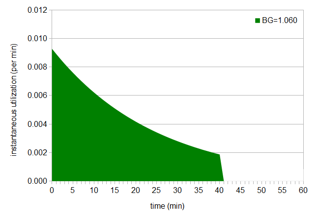
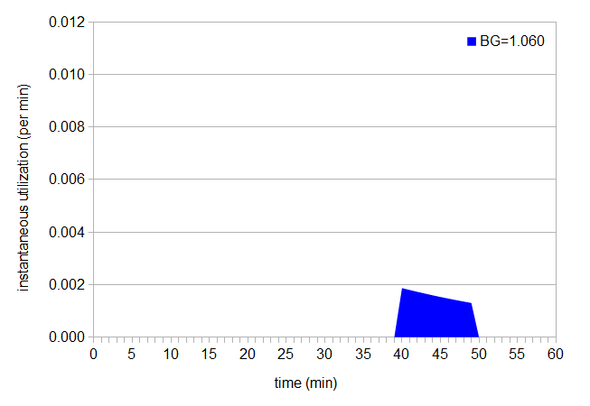
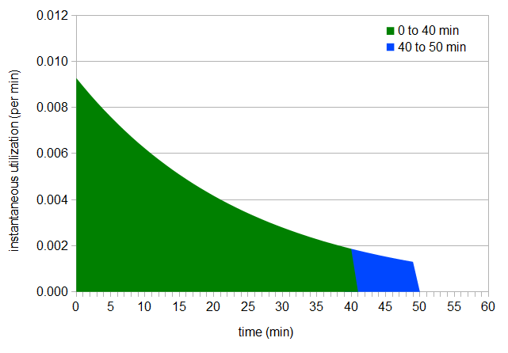
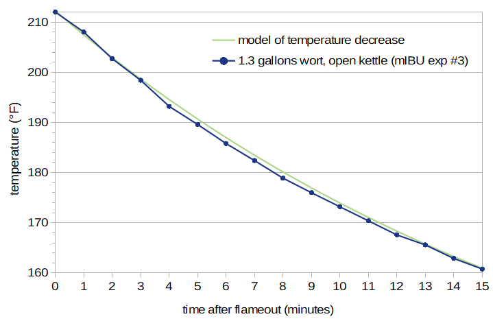
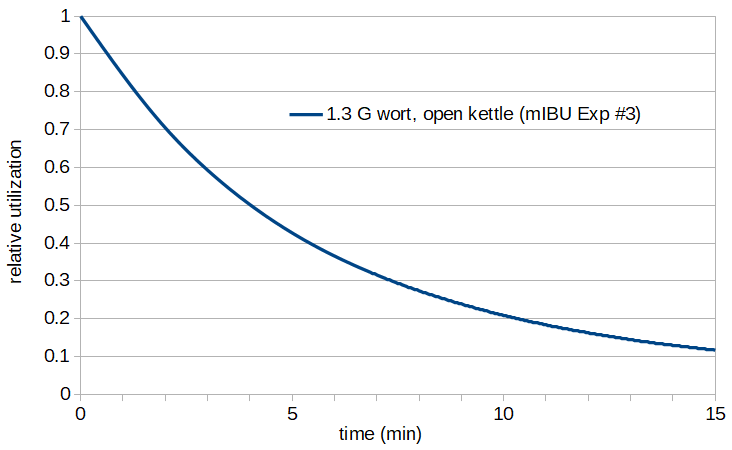
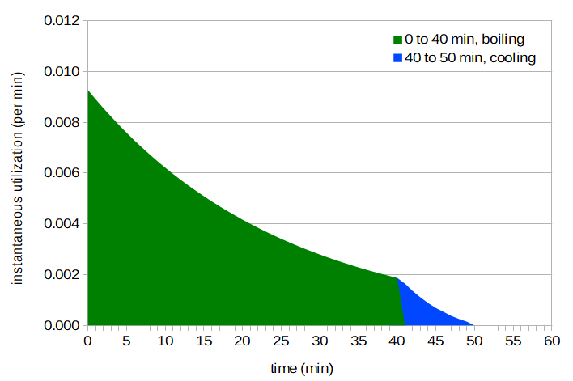

Abstract
The predicted IBU contribution when adding hops at flameout is usually zero. This is in conflict with widespread experience, which shows that adding hops at flameout does add significant bitterness. This blog post proposes a modification to the Tinseth IBU formula to account for hops added late in the boil and/or at flameout. This new metric is referred to as "maximum IBU" (or "mIBU"), for reasons explained below. I've created an on-line calculator for the mIBU method here: https://jphosom.github.io/alchemyoverlord/ with a description of this calculator in the blog post An On-Line Calculator for the mIBU Technique. John Koopmans has made an implementation of the mIBU method available in an Excel document.
While the technique described here is still correct, I've since developed another IBU calculator (called SMPH) that accounts separately for the contribution of isomerized alpha acids and auxiliary bittering compounds to the IBU. The SMPH model incorporates the post-flameout technique described here.
Problem
Introduction
If one takes a standard formula for predicting IBUs, such as Tinseth's, hops additions at flameout contribute nothing to the final IBU measurement. Tinseth had "access to some handy tools and knowledgeable friends at the USDA hop labs and the Flavor Perception labs at Oregon State University," and he has "had quite a few worts and beers analyzed." His formula is very widely used, presumably because it does as good or better a job at predicting bitterness levels compared with other available formulas. So it's worth taking his work and formula very seriously.
However, a quick glance at various internet sources indicates that this is one area where formulas and observations do not always line up. In a BYO article from Mar/Apr 2013, it is reported that large systems (15 bbl = 465 G = 1760 liters) get 16% utilization from hops added at flameout, while smaller systems (11 G or 42 liters) get around 10% utilization. In a discussion at probrewer, one user says "Matt Brynildson, a former hop chemist, claims to get 22% whirlpool utilization at Firestone Walker (50-bbl system) and to have gotten 15% whirlpool utilization on a 10-bbl brewpub system". In another discussion at probrewer, utilization rates between 13% and ~30% are reported for whirlpool additions. In short, we have reported post-flameout utilization (and consequent bitterness) ranging from 10% to 30%, and a lot of numbers in between. There is apparently some utilization happening after flameout; it's just not quite clear how much. The question then becomes how to model post-flameout utilization in the prediction of IBUs.
Solution
Approach
Hop utilization decreases as a function of temperature, with more utilization at boiling and less utilization at lower temperatures. (I've seen claims that utilization drops to zero at around 180°F (82°C), and claims that the decrease in utilization follows an Arrhenius equation. In a separate blog post, I look at relative utilization as a function of temperature.) It's also very clear that when the gas (or electricity) of the boil is turned off, the temperature of the wort doesn't instantaneously drop to room temperature. (If you start your wort chiller immediately at flameout and have a small volume, then you'll probably get pretty close to the Tinseth estimation of 0 IBUs with a hops addition at flameout, but most people leave the hops in the naturally-cooling wort for at least some time before forced cooling.) Therefore, there is (usually) additional utilization happening after flameout, and the degree of this additional utilization depends on when the hops were added and how quickly the wort cools. It seems possible to take Tinseth's formula for IBUs, combine it with a measure of how utilization is affected by temperature, and calculate the additional IBUs that occur after flameout... and that's exactly what this section does.
Tinseth's IBU Formula
I'll use Glenn Tinseth's formula for predicting IBUs in this post, because this formula is "considered very accurate" (BeerSmith: Calculating Hop Bitterness: How much Hops to Use?), but also simply because I haven't yet worked as much with the formulas from Rager or Garetz. Tinseth's formula is as follows:
| IBU = U(BG,t1) × D(AA,W,V) | [1] |
| U(BG,t1) = b(BG) × f(t1) | [2] |
| D(AA,W,V) = AA × W × 1000 / V | [3] |
| b(BG) = 1.65 × 0.000125(BG − 1) | [4] |
| f(t1) = (1 − e(-0.04t1)) / 4.15 | [5] |
(Glenn Tinseth, according to an e-mail exchange I had with him, took small samples every 5 or 10 minutes and quickly cooled those samples in glass sample jars in a refrigerator, so the amount of utilization that he obtained after taking each sample was minimal. This is why the estimated utilization for a boil time of zero minutes using the Tinseth formula is zero.)
I'll refer to U(BG,t1) simply as "utilization"; this is the utilization that we believe also decreases as a function of temperature, which isn't indicated in the current formula. The utilization is a unitless number less than or equal to 1; usually it's below 0.3. Utilization normally represents the relative amount of alpha acids added to the wort that (a) get converted into isomerized alpha acids and (b) end up in the finished beer. The Tinseth formula (and other formulas) have a direct relationship between utilization, isomerized alpha acids, and IBUs. This is an oversimplification, since other hop components (oxidized alpha and beta acids, and polyphenols) are not part of the utilization equation, but they still contribute to bitterness and the measured IBU value. The utilization in these IBU formulas therefore implicitly includes the effects of these other components on the IBU value. This oversimplification usually works out fairly well, though, for typical hop rates and boiling times.
Plot of Utilization
We can plot the utilization in Equation [2] as a function of time, starting at time 0 and increasing with the length of time that the hops are in the kettle:
 Figure 1. Utilization as a function of time, with time increasing from left to right. The utilization increases as the boil gravity (BG) decreases.
This function shows the cumulative effect of utilization after the hops have spent a certain amount of time in the kettle, from t1=0 (hops addition) until some final time. If we add hops at 40 minutes before flameout to a wort with gravity 1.060, the hops spend 40 minutes in the boiling wort, and cumulative utilization during those 40 minutes is 0.185. (Here we're assuming that the utilization drops immediately to zero at flameout.) We can find the value of 0.185 by simply looking at the utilization value at the 40-minute mark for a boil gravity of 1.060. Time 0 is when hops are added to the pot, and the selected time (e.g. 40 minutes) is when we remove the hops from the kettle (perhaps at flameout) and/or bring utilization down to zero.
Instantaneous Utilization
Next, we can look at the instantaneous effect of hop utilization at any point in time, by taking the derivative (or slope) of the utilization function:
| U(BG,t1) = 1.65 x 0.000125(BG−1) × (1 − e(-0.04t1)) / 4.15 | [6] |
| dU(BG,t1)/dt1 = -1.65 x 0.000125(BG−1) × -0.04e(-0.04t1)/4.15 | [7] |
 Figure 2: Instantaneous utilization as a function of time.
This graph tells us how much hop utilization is happening, for example, at exactly the 40-minute mark (in this case, 0.001873 utilization/minute for BG 1.060). (Note that the rate of utilization is highest when the hops are first added, and this rate decreases as the hops stay in the boil longer. Tinseth explains that the shape of the utilization curve is because "alpha acid isomerization is a first order, or more likely, a pseudo first order chemical reaction.") If we integrate all of these instantaneous utilization values, from time 0 (when we add the hops) up to the time when we remove the hops, we end up with the original utilization value. For example, if we have a hops addition at 40 minutes for a boil gravity of 1.060, we can compute the area under the instantaneous-utilization curve from 0 to 40 (shown below in green), and that area will equal the total utilization at 40 minutes from the original utilization formula (0.185).
 Figure 3: Area under instant utilization curve, up to 40 min
We can also integrate only over a specific time range, to determine how much utilization is happening during a particular period of time; for example, we can look at the utilization between 40 minutes and 50 minutes for a boil gravity of 1.060, which is the area below shown in blue:
 Figure 4: Area under instant utilization curve, between 40 and 50 min.
Additional Utilization
Let's pretend for a minute that when flameout happens, we forget to turn off the heat for exactly 10 minutes and the boil keeps going. When we realize our mistake, we immediately and quickly cool the wort (which has an average boil gravity of 1.060). In this case, utilization keeps happening after our intended flameout; what was a hops addition at 40 minutes becomes really a hops addition at 50 minutes, because the hops are in the boiling wort for an additional 10 minutes:
 Figure 5: Area under instant utilization curve, from 0 to 50 min.
We can look at the utilization of our intended time (40 minutes) and our extra time (10 minutes, between 40 minutes and 50 minutes) separately, by finding the areas under the two separate curves. In this case, the utilization up to 40 minutes is 0.185 (just as we'd expect), and (by integration of the instantaneous utilization over the range from 40 to 50 minutes) the additional utilization during the final 10 minutes is 0.015. The total utilization is therefore 0.200. What really happens (in most cases, when we're paying attention) is that we do remember to turn off the heat at flameout, but the wort remains hot for some period of time. We're not getting maximum utilization after flameout, but we are getting some while the wort is still hot.
Decrease in Utilization as a Function of Temperature and Time
After flameout, utilization is happening (unless we immediately and very quickly cool the wort), but not at the full rate. It would be nice to have some function of utilization that shows how it decreases after flameout, as the temperature slowly decreases. We can create such a function from two functions: (a) the temperature of the wort as a function of time after flameout, and (b) the degree of hop utilization as a function of temperature.
If we measure the temperature of the wort after flameout at one-minute intervals, we can map these data points to a function. Figure 6 shows such a series of measurements (from mIBU Experiment #3) and a function that predicts temperature after flameout with an exponential decay function.
 Figure 6: Temperature as a function of time after flameout, without forced cooling. This graph shows the temperature of 1.3 G of wort as it cools in an open kettle. The predicted temperature (green line) provides a very good fit to the observed values.
This temperature-decay function is described in more detail in the blog post Predicting Wort Temperature After Flameout. When working in Fahrenheit, the function is T(t2) = 96.66 × exp(-b × t2) + 115.52, when working in Celsius, the function is T(t2) = 53.70 × exp(-b × t2) + 46.40, and when working in Kelvin, the function is T(t2) = 53.70 × exp(-b × t2) + 319.55. (The notation "exp()" indicates the exponential function, where exp(x) = ex = 2.71828x.) Regardless of the temperature units, b = (0.0002925 × effectiveArea / volume) + .00538 and effectiveArea = (surfaceArea × openingArea)0.5. The parameter volume is the volume of the wort in liters, surfaceArea is the surface area of wort exposed to air (in square centimeters), and openingArea is the area of the opening in the kettle (in square centimeters). Both surfaceArea and openingArea can be computed from the diameter of the kettle and the diameter of the opening, using the formula area = π × (diameter/2)2 or 3.14159 × radius2. (Note that if you're working in British Imperial units, it's easiest to convert volume and diameter to metric.)
Next, we need a function that describes the relative amount of utilization as a function of temperature, with utilization at boiling defined to have a value of 1.0. Based on the analysis from this blog post, we can use this function: Urel(T) = 2.39×1011 e-9773/T (where T is temperature in degrees Kelvin).
We can then plot the relative utilization as a function of time, as the temperature decreases after flameout, with 1.3 G of wort cooling in an open kettle, using the predicted temperature in Kelvin at each time point (based on the wort volume, kettle diameter, and kettle opening diameter) and the relative utilization at each predicted temperature:
 Figure 7: Relative utilization as a function of time, for 1.3 G of wort in an uncovered kettle.
The next formulas summarize the mappings between temperature, time, and relative utilization, working in degrees Kelvin:
| Urel(T) = 2.39×1011 e-9773/T | relative utilization as a function of temperature (T is in degrees Kelvin) | [8] |
| T(t2) = 53.70 × exp(-b × t2) + 319.55 | temperature (in degrees Kelvin) as a function of time, if t2 ≥ 0. The parameter b is defined in the text. | [9] |
| Urel(t2) = 2.39×1011 e-9773/(53.70 × exp(-b × t2) + 319.55) | relative utilization as a function of time, if t2 ≥ 0. | [10] |
| Urel(t2) = 1 | relative utilization as a function of time, if t2 < 0 | [11] |
Note that these formulas may explain why we get different opinions on how much utilization there is after flameout; the rate at which the wort temperature decreases is dependent on volume, kettle diameter, and kettle opening. Larger systems with more volume will cool more slowly, yielding increased utilization. Two systems that have the same volume but different types of kettles will cool differently, again yielding different utilization. If you want to know how the IBUs in a beer will change as you "scale up" from a smaller batch size to a larger size, you can use the different volumes and kettle parameters to estimate the increase in utilization and IBUs.
Combining Functions
Now we have a complete picture of instantaneous utilization as a function of time. Before flameout, we use the instantaneous utilization of Equation [7], where t1 is the amount of time that the hops are in the kettle. After flameout, we can combine our measure of instantaneous utilization with how much utilization is happening at each instant, by taking the pointwise product of the two formulas. For example, if the instantaneous utilization at boiling is 0.001873 and the relative utilization at 208°F (97.8°C) is 0.90, then the instantaneous utilization at this temperature is 0.001873 × 0.90 = 0.0016857.
Since we measure time with two different starting points in the different equations (when hops are added, t1, and when flameout happens, at which point t2 = 0), we need to convert from one to the other. If we define tf to be the time, relative to t1, at which flameout happens, then t2 = t1 − tf. We can then use t1 and tf in the same formula to measure these two time points on the same scale. We can write this complete picture with the following formulas:
| deg(t1) ⋅ dU(BG,t1)/dt1 = -1.65 x 0.000125(BG−1) × -0.04e(-0.04t1)/4.15 | if t1 < tf | [12] |
| deg(t1) ⋅ dU(BG,t1)/dt1 = Urel(t1 − tf) × (-1.65 x 0.000125(BG−1) × -0.04e(-0.04t1)/4.15) | if t1 ≥ tf but before forced cooling | [13] |
| deg(t1) ⋅ dU(BG,t1)/dt1 = 0 | after forced cooling | [14] |
 Figure 8. Area under instant utilization, with cooling between 40 and 50 minutes.
If we integrate this plot (or function) from flameout until the utilization becomes zero (usually due to forced cooling), we can determine the total utilization that occurs after flameout. This value can then be added to the utilization that occurs before flameout (our standard formula), and then we can compute the total IBUs that result from the combined utilization, pre- and post-flameout.
Now we get to a tricky part. The Tinseth equation has only the hops AA rating, hops weight, boil time, wort volume, and specific gravity as inputs. From these values, it's estimating the IBU value. While the concentration of isomerized alpha acids (IAA) is the primary contributor to the IBU value, other factors also influence the IBU (especially at short boil times): oxidized alpha and beta acids, and polyphenols. These factors can be referred to collectively as non-IAA components (or auxiliary bittering compounds (ABC)), and they're not explicitly addressed in the Tinseth model. These non-IAA components do not require isomerization, and so they affect the IBU value quickly and, it seems, their concentrations remain somewhat constant during the boil. In another blog post, I estimate that the non-IAA components account for more than half of the Tinseth utilization formula at 5 minutes (even with well-preserved hops). Therefore, I think that the Tinseth equation underestimates IBU values below 5 minutes, because it doesn't account for non-IAA components; at 5 minutes and above, the Tinseth utilization function is modeling the combination of both IAA and non-IAA components. (The Rager equation has a roughly constant utilization of 0.05 between 0 and 5 minutes, which may be accounting for the contribution of non-IAA components to the IBU.)
Having the Tinseth equation model a combination of IAA and non-IAA components usually doesn't matter. In this case, however, we are modeling the degree of alpha-acid utilization as a function of temperature, not the degree of utilization of alpha acids plus non-IAA components. The primary problem is that the non-IAA components are much less dependent on temperature than the rate of isomerization. As a further complication, the non-IAA components have a very different time-dependent contribution to IBUs than the isomerization reaction of alpha acids. It's difficult to combine this function with a time-independent but temperature-dependent function of relative alpha-acid utilization.
An expedient solution is to set the relative utilization to 1.0 between 0 and 5 minutes. By doing this, we are implicitly saying that during the first five minutes of the hop addition, all of the IBU contribution is coming from non-IAA components and that they contribute the same amount regardless of temperature. After five minutes of steeping, the contribution of isomerized alpha acids dominates, and we switch to the temperature-dependent relative utilization of alpha acids. This is an over-simplification of what's really happening, but it requires no modifications to the original Tinseth equation, and it corresponds better with our understanding of the various contributions to the IBU value. If hops are added more than 5 minutes before flameout, this modification has no impact on estimated IBU values, regardless of any post-boil steeping; only close-to-flameout hop additions are impacted. This solution is not exact or accurate, but better than ignoring non-IAA components entirely.
Final Algorithm
The final formula for measuring IBUs after flameout might get complicated. Because we don't really need the infinite precision that a mathematical formula gives us, I'll provide an algorithm for computing IBUs with the necessary modifications to the Tinseth formula. In this case, we'll just use computer magic to compute the area under a curve with an arbitrary degree of precision.
Here is the algorithm for computing total IBUs, including the contribution of post-flameout utilization, in C-like pseudocode, with precision to at least two decimal places:
// the following code assumes we know the boil gravity (BG), post-boil volume
// (volume_gallons, in gallons), the weight of hops added (hopsWeight_oz,
// in ounces), the AA value of the hops (AA, in percent, with values from
// 0 to 100), the time of the hops in the boil (boilTime_min, in minutes),
// when (relative to flameout) there is forced cooling (coolTime_min, in
// minutes), the kettle diameter (kettleDiameter_inches, in inches), and
// the kettle opening diameter (openingDiameter_inches, in inches).
// The forced cooling is assumed here to be instantaneous.
volume_liters = volume_gallons * 3.78541;
hopsWeight_grams = hopsWeight_oz * 28.3495;
kettleDiameter_cm = kettleDiameter_inches * 2.54;
openingDiameter_cm = openingDiameter_inches * 2.54;
AA_maxOne = AA / 100.0;
boilUtilization = computeBoilUtilization(boilTime_min, BG);
postBoilUtilization = computePostBoilUtilization(boilTime_min, BG,
coolTime_min, volume_liters, kettleDiameter_cm,
openingDiameter_cm);
totalUtilization = boilUtilization + postBoilUtilization;
IBU = (totalUtilization * AA_maxOne * hopsWeight_grams * 1000.0) /
volume_liters;
print("total IBUs, including post-flameout, is %f\n", IBU);
procedure computeBoilUtilization(boilTime_min, BG) {
bignessFactor = 1.65 * pow(0.000125, (BG-1.0));
boilTimeFactor = (1.0 - exp(-0.04 * boilTime_min)) / 4.15;
decimalAArating = bignessFactor * boilTimeFactor;
return(decimalAArating);
}
procedure computePostBoilUtilization(boilTime_min, BG, coolTime_min,
volume_liters, kettleDiameter_cm, openingDiameter_cm) {
integrationTime = 0.001;
decimalAArating = 0.0;
for (t = boilTime_min; t < boilTime_min + coolTime_min; t = t + integrationTime) {
dU = -1.65 * pow(0.000125, (BG-1.0)) * -0.04 * exp(-0.04*t) / 4.15;
surfaceArea_cm2 = 3.14159 * (kettleDiameter_cm/2.0) * (kettleDiameter_cm/2.0);
openingArea_cm2 = 3.14159 * (openingDiameter_cm/2.0) * (openingDiameter_cm/2.0);
effectiveArea_cm2 = sqrt(surfaceArea_cm2 * openingArea_cm2);
b = (0.0002925 * effectiveArea_cm2 / volume_liters) + 0.00538;
temp_degK = 53.70 * exp(-1.0 * b * (t - boilTime_min)) + 319.55;
degreeOfUtilization = 2.39*pow(10.0,11.0)*exp(-9773.0/temp_degK);
if (t < 5.0) degreeOfUtilization = 1.0; // account for nonIAA components
combinedValue = dU * degreeOfUtilization;
decimalAArating = decimalAArating + (combinedValue * integrationTime);
}
return(decimalAArating);
}
Note that if we quickly cool the wort at flameout, then coolTime_min is zero and we get the same result as the original Tinseth formula. Only when we have some time between flameout and forced cooling do we get additional IBUs.
For those of you who would like to use this method but aren't programmers, I've created a summary blog post and an on-line calculator here: https://jphosom.github.io/alchemyoverlord/. If you have any questions or would like help in implementing it yourself, let me know by sending an e-mail to the name associated with this blog (no spaces) at yahoo.
John Koopmans has also made an implementation of the mIBU method available in an Excel document. In order to use this document to predict IBU values, you'll need to enable macros. The document contains a Visual Basic macro that is required in order to implement the loop over time values.
Examples
Because the instantaneous utilization is greatest when the hops are first added, the effect of bitterness contributions after flameout is more pronounced for late hop additions than for early additions. If we have 2 oz (56.7 g) of 10% AA hops added at 6 minutes before flameout in 5.25 G (19.87 liters) of wort with specific gravity 1.060, the kettle then cools naturally for an additional 10 minutes, and we then force-cool the wort quickly, we get 0.0493 utilization predicted for the 6-minute boil and an additional 0.0431 utilization predicted after flameout. The combined predicted utilization of 0.0924 is nearly double that of the prediction that doesn't take into account post-flameout utilization, resulting in a predicted IBU of 26 instead of 14.
For the same case, but with hops added at 60 minutes instead of 6 minutes before flameout, we get 57 IBU predicted by the standard Tinseth formula and 59 IBUs predicted by the combination of boil utilization and post-boil utilization.
As another example, we can add the same hops at flameout and perform forced cooling at 30 minutes after flameout. In this case, we get 8.0% utilization for a wort with boil gravity 1.060. If we double the wort volume (and keep all other parameters the same), we get 10.0% utilization. We can get 8% utilization and 23 IBUs from 2 oz (56.7 g) of 10% AA hops added at flameout with a specific gravity of 1.060 and post-boil volume of 5.25 gallons (19.87 liters), with forced cooling after 30 minutes. If we keep the kettle covered after flameout, the temperature will decrease more slowly, and we will get 13% utilization and 36 IBUs from this flameout addition.
What's in a Name
One problem with this formula for predicting IBUs is that the predicted values will almost always be larger than what we're used to... sometimes, quite a bit larger. I like to aim for an IBU:OG ratio (e.g. 1.0) when planning a recipe, and I've developed some intuition for what this ratio means in practice using the Tinseth formula. When the predicted IBU values become larger by some amount, I've lost my point of reference.
I've decided to name this combined measure of boil and post-boil IBUs "maximum IBU" or "mIBU", because it represents a (roughly) maximum bound on IBU values in finished beer. IBUs will decrease as the pH is lowered, with an increased hopping rate, with poorly-stored hops, and over time, but mIBU values should be approximately the highest observed IBU values.
Using a different name allows a separation between the IBUs predicted by the Tinseth formula that I've grown accustomed to, and these new, larger values. I will use both terms in my brewing, and hopefully over time I'll get a sense of the perceived bitterness of mIBU values and an intuitive feeling for the relationship between Tinseth IBUs and mIBUs. The separation of terms will hopefully avoid confusion. Is "mIBU" a great name? No, actually I don't much care for the name itself, but it's a useful way to identify this IBU estimation method.
Data/Supporting Evidence
I've conducted a series of three experiments to evaluate the ideas in this blog post. The first experiment simply confirmed that I can get measured IBU values that correlate reasonably well with the Tinseth formula when cooling the wort immediately after flameout. (I think this experiment would have turned out better if I'd used very fresh hops.) The second experiment looked at the relative degree of utilization as a function of temperature, and provided the reasoning behind Equation 8. The third experiment compared measured IBU values with values predicted by the Tinseth equation and the mIBU approach. This experiment confirmed that the mIBU approach yields, for at least this one set of data, better IBU estimates at short (or zero) boil times. Another result from this experiment was that I needed to account for the age of the beer and the alpha-acid concentration at the start of the boil, in order for the recommended Tinseth scaling factor of 4.15 to provide a good fit to the data.
To get measured IBU values, I sent samples to Analysis Laboratory. Scott Bruslind from Analysis Laboratory was very responsive and encouraging, providing a full set of measurements (including gravity, pH, and attenuation, in addition to IBUs) as well as alpha-acid measurements of hops.
Conclusion
This post has presented an algorithm for modifying Tinseth's IBU formula to predict post-flameout IBU contributions. In addition to the standard parameters needed to predict IBUs (specific gravity, post-boil volume, etc.), this algorithm needs as input (a) the wort volume, kettle diameter, and kettle opening diameter in order to predict wort temperature as a function of time, and (b) the time at which forced cooling begins.
Acknowledgements
I'd like to thank Prof. Glenn Tinseth for his prompt and very helpful answers to a number of questions I had about his formula. I'd also like to thank Scott Bruslind for his encouragement and the analysis of hops and IBUs.
Navigate to:
AlchemyOverlord home page